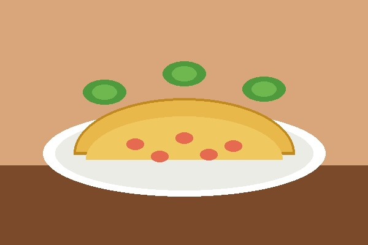
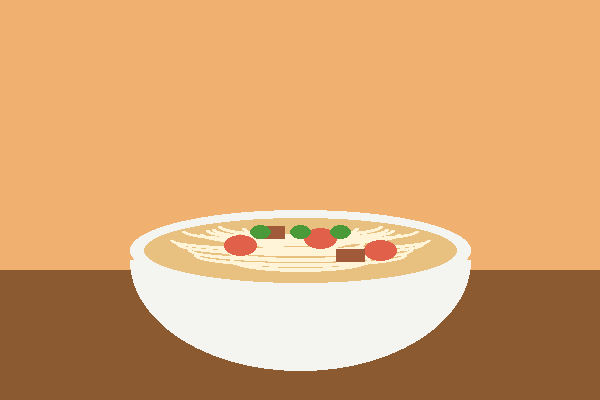
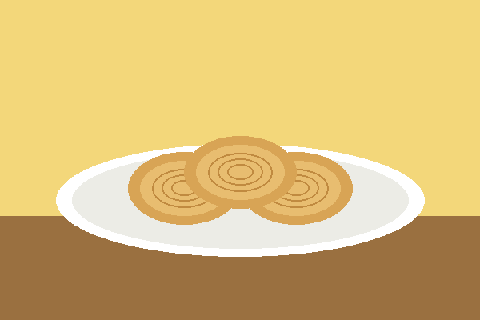
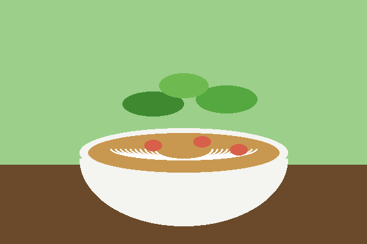
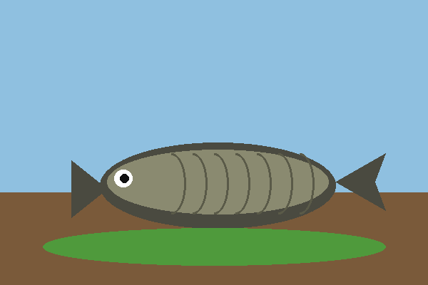
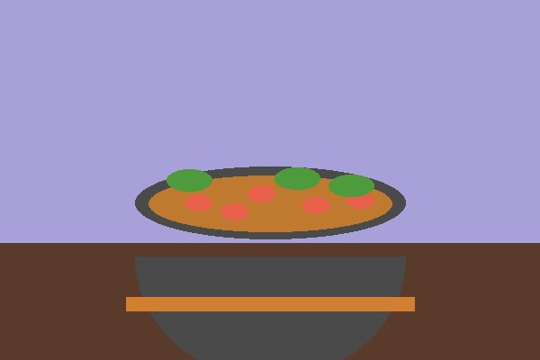
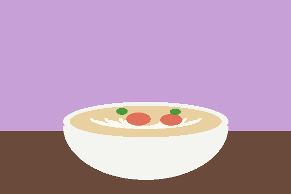

Giới thiệu
Miền Tây Nam Bộ nổi tiếng với sông nước, vườn trái cây và những món ăn dân dã. Trang web này giới thiệu chín món ăn và thức uống quen thuộc, từ bánh xèo giòn rụm đến ly cà phê sữa đá buổi sáng.
Mỗi món đi kèm một bức ảnh và lời giới thiệu ngắn về nguyên liệu hoặc hương vị đặc trưng. Bạn có thể dùng trang này để chọn món thử khi ghé thăm vùng đất này.






